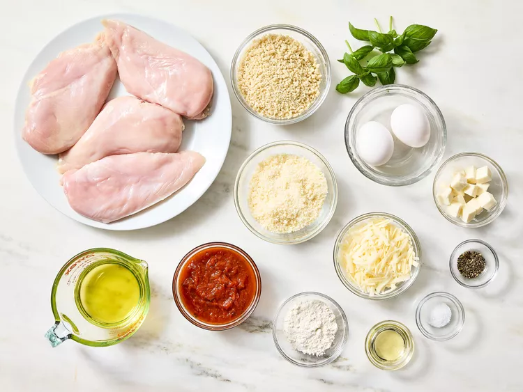
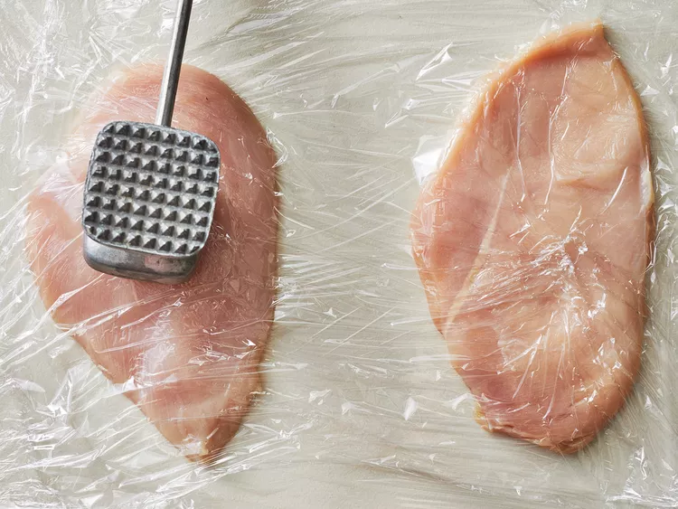
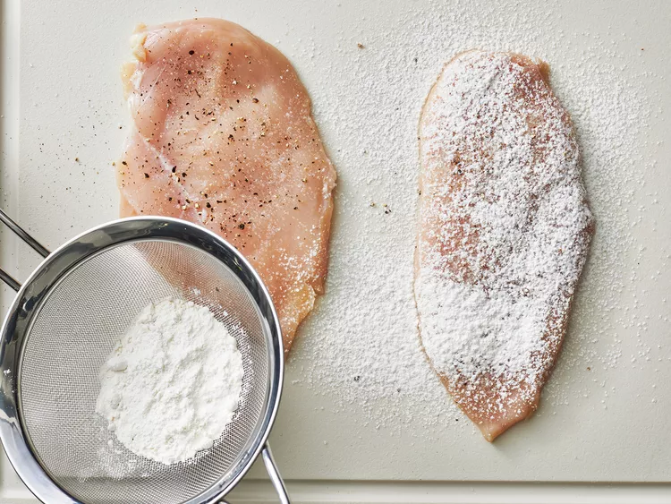
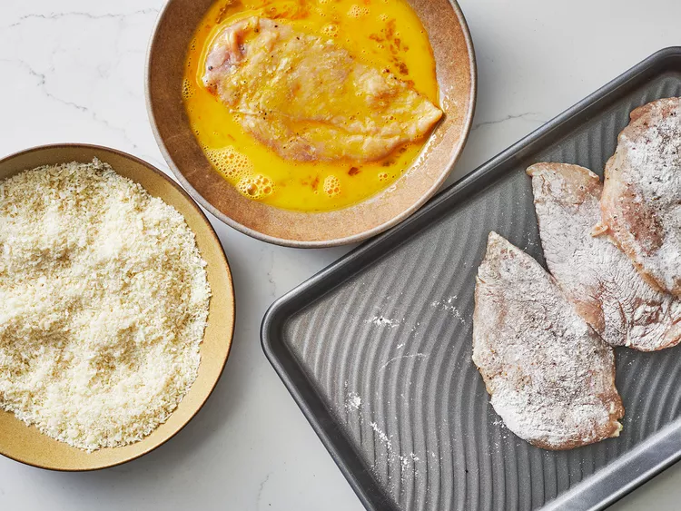
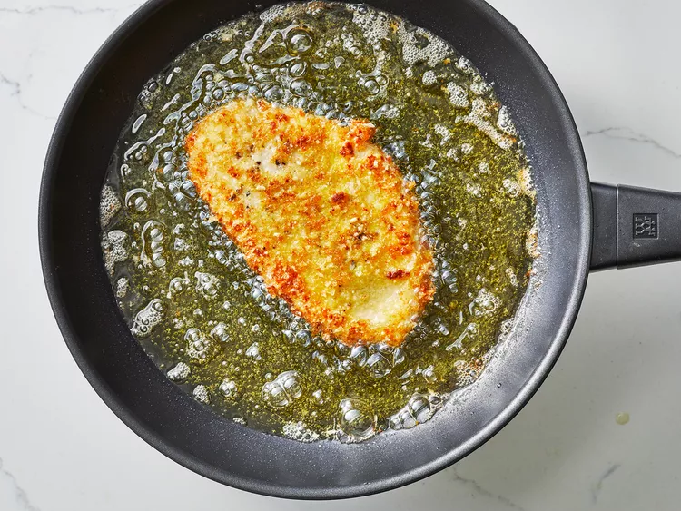
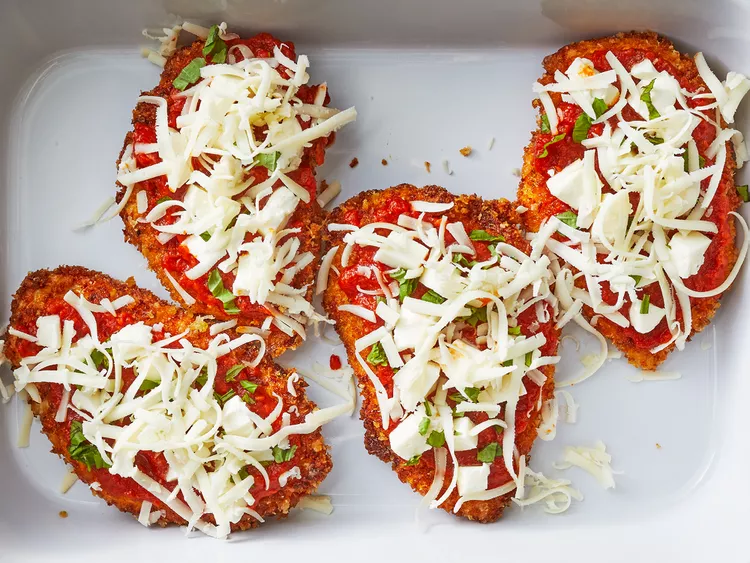
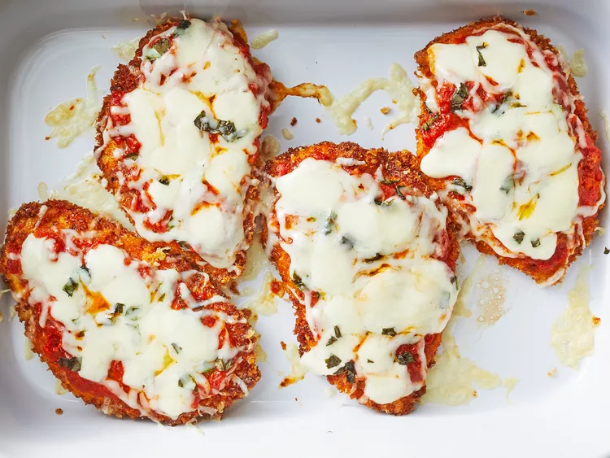

Chicken Parmesan Recipe

Description
My version of chicken Parmesan is a little different than what they do in the restaurants, with less sauce and a crispier crusts.
Ingredients
- 4 skinless, boneless chicken breast halves
- salt and freshly ground black pepper to taste
- 2 large eggs
- 1 cup panko bread crumbs, or more as needed
- ¾ cup grated Parmesan cheese, divided
- 2 tablespoons all-purpose flour, or more if needed
- ½ cup olive oil for frying, or as needed
- ½ cup prepared tomato sauce
- ¼ cup fresh mozzarella, cut into small cubes
- ¼ cup chopped fresh basil
- ½ cup grated provolone cheese
- 2 teaspoons olive oil
Instructions
- Gather the ingredients. Preheat an oven to 450 degrees F (230 degrees C).

- Place chicken breasts between two sheets of heavy plastic (resealable freezer bags work well) on a solid, level surface. Firmly pound chicken with the smooth side of a meat mallet to a thickness of 1/2-inch.

- Season chicken thoroughly with salt and pepper. Using a sifter or strainer; sprinkle flour over chicken breasts, evenly coating both sides.

- Beat eggs in a shallow bowl and set aside. Mix bread crumbs and 1/2 cup Parmesan cheese in a separate bowl, set aside. Dip a flour-coated chicken breast in beaten eggs. Transfer breast to the bread crumb mixture, pressing crumbs into both sides. Repeat for each breast. Let chicken rest for 10 to 15 minutes.

- Heat 1/2 inch olive oil in a large skillet on medium-high heat until it begins to shimmer. Cook chicken in the hot oil until golden, about 2 minutes per side. The chicken will finish cooking in the oven.

- Transfer chicken to a baking dish. Top each breast with 2 tablespoons tomato sauce. Layer each chicken breast with equal amounts of mozzarella cheese, fresh basil, and provolone cheese. Sprinkle remaining Parmesan over top and drizzle each with 1/2 teaspoon olive oil.

- Bake in the preheated oven until cheese is browned and bubbly and chicken breasts are no longer pink in the center, 15 to 20 minutes. An instant-read thermometer inserted into the center should read at least 165 degrees F (74 degrees C).
